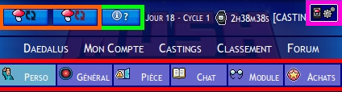
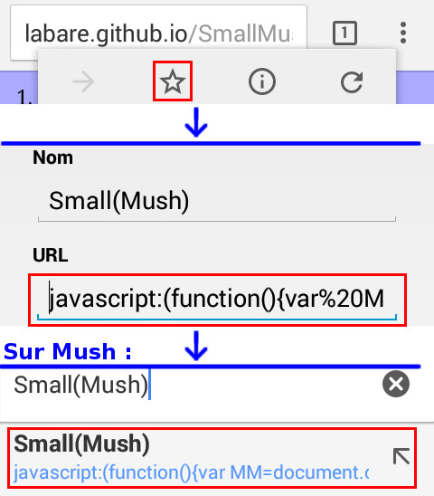

Utilisation — Installation — Installer Flash — FAQ
Small(Mush) est un script pour Mush développé par LAbare, grâce auquel vous allez pouvoir profiter d'un confort exceptionnel de votre jeu préféré sur mobile. Oui oui. Et en plus, pour les écrans réfractaires au Flash, les fonctions essentielles du jeu sont émulées pour vous permettre de jouer entre deux stations de métro. C'est pas trop la classe ? Essayez quand même d'installer Flash pour avoir un jeu complètement fonctionnel.
Par contre, j'insiste sur le fait qu'il s'agit d'un script. Ce n'est pas une application mobile de Mush. C'est-à-dire qu'il est développé par un joueur, que la Motion Twin n'a rien à voir avec, que l'interface du jeu subit quelques modifications (pas trop déroutantes non plus), et que les éventuels bugs qui pourraient survenir ne sont pas à remonter sur le forum, mais à moi. Le script se contente principalement d'essayer de faire rentrer l'interface assez large de Mush dans l'espace réduit d'un écran portable. Toutes les questions, les suggestions, les chocolats et l'amour que vous voudriez envoyer, c'est par là et pas vraiment ailleurs.
Pour tout faire rentrer dans un petit écran, Small(Mush) divise le jeu en cinq onglets.
En haut à gauche se trouvent les boutons pour rafraîchir le jeu, ainsi qu'un bouton d'aide qui affiche l'infobulle de n'importe quel élément, même ajouté.
Le bouton en haut à droite vous donne accès aux paramètres du script. Jetez-y un œil, il y a des options sympas !
La barre en-dessous découpe le jeu en onglets : Perso, Général, Pièce, Chat et Module (c'est-à-dire jeu Flash et terminaux auxquels vous accédez), et le distributeur.
Le script peut être activé automatiquement pour Firefox et Dolphin Browser sur Android ; il reste parfois possible pour d'autres navigateurs (comme Chrome) de l'activer manuellement lorsque vous allez sur Mush.
Cet addon Firefox n'est plus tenu à jour. Vous pouvez essayer de l'installer… si ça marche.
Attention : cette technique peut ne pas fonctionner selon les navigateurs.
Cette technique fonctionne bien sous Chrome, et apparemment sous Safari pour les possesseurs d'iPhones.
Cliquez pour afficher l'image : exemple avec Chrome.
Flash n'est pas nécessaire, mais si vous pouvez l'installer, vous aurez toutes les fonctionnalités de Mush.
Requis : Android 4.3 maximum. (Voir Paramètres → À propos du téléphone → Version d'Android)
L'émulation, c'est une pâle et incomplète copie du jeu Flash grâce aux informations cachées dans la page. Dans l'onglet Pièce, vous avez accès aux équipements, aux coéquipiers et à l'inventaire, vous pouvez vous déplacer, et vous serez normalement averti s'il y a un incendie dans la pièce. Sans Flash, vous ne pouvez pas voir la minimap du vaisseau, ni les hunters lorsque vous êtes en tourelle ou en patrouilleur, ni les viser. Vous pouvez tout de même tirer au hasard en patrouilleur en sélectionnant l'équipement Poste de tir, ça peut toujours dépanner.
Je ne peux vraiment rien y faire, mais le zoom de départ devrait suffire.
Une caméra installée est un équipement, donc vous la trouverez dans l'onglet Pièce.
Malheureusement oui, un portable est moins puissant qu'un ordinateur, donc plus lent à ce moment-là. Le chat en particulier est assez lourd, vous pouvez vous débarasser de quelques favoris ou recréer des canaux trop vieux pour l'alléger. Vous pouvez aussi délester le chat depuis les paramètres pour alléger le canal général, comme le fait le script Ctrl+W.
Tant que vous n'effacez pas votre cache, ça devrait aller. Le script ne change que lorsqu'il est mis à jour, donc seul le poids de la page compte : entre 50 et 100 Ko, rechargés à chaque action. Cela représente environ deux fois moins qu'une recherche Google.
De l'avant vers l'arrière du vaisseau. Donc si vous voulez le nounours, prenez le lit Beta 1 :P Mais les images des lits dans l'onglet Pièce sont choisies au hasard, puisque je ne peux pas savoir qui est dans quel lit.
Ce bug n'est pas causé par le script (il m'est arrivé une fois il y a bien longtemps, avant que je ne commence à coder), c'est un problème qui arrive (rarement) avec les navigateurs mobiles. J'ai essayé de le corriger, mais il est très dur à reproduire. J'ai toutefois récemment ajouté un indicateur du canal dans lequel le jeu pense que vous êtes, mais je ne sais pas si cela suffira à détecter le problème.